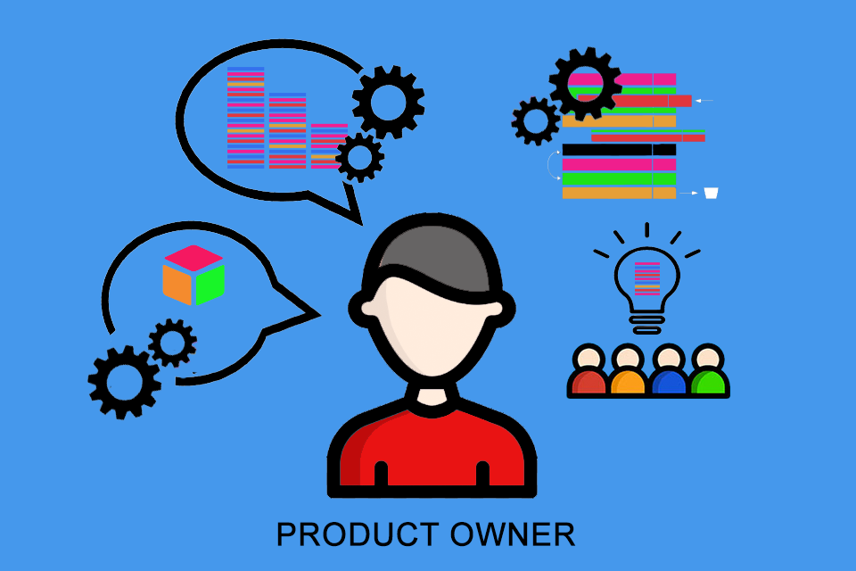

Product Owner

O Product Owner desempenha um papel vital no desenvolvimento ágil de software, atuando como o principal
elo entre a equipe de desenvolvimento e os stakeholders do projeto. Responsável por representar os
interesses do cliente e definir as prioridades do produto, o Product Owner desempenha um papel crucial
na garantia de que o produto desenvolvido atenda às necessidades do usuário final e atinja os objetivos
de negócio.
Definir a Visão do Produto:
Estabelecer uma visão clara e abrangente para o produto, alinhada aos objetivos estratégicos da
empresa.
Comunicar e compartilhar essa visão com a equipe de desenvolvimento e demais stakeholders.
Gerenciar o Backlog do Produto:
Criar e priorizar itens no backlog do produto, representando as necessidades e requisitos dos
clientes e
stakeholders.
Manter o backlog constantemente atualizado, refinando e ajustando os itens conforme necessário.
Colaborar com a Equipe de Desenvolvimento
Trabalhar em estreita colaboração com a equipe de desenvolvimento, esclarecendo dúvidas, fornecendo
feedback e garantindo que as expectativas dos stakeholders sejam compreendidas e atendidas.
Participar de reuniões diárias de scrum e outras atividades de planejamento e revisão.
Tomar Decisões Prioritárias
Tomar decisões rápidas e informadas sobre quais funcionalidades e melhorias devem ser implementadas
em
cada ciclo de desenvolvimento.
Considerar fatores como valor para o cliente, retorno sobre o investimento e necessidades do mercado
ao
definir as prioridades.
Validar e Aceitar Entregas
Avaliar as entregas da equipe de desenvolvimento para garantir que atendam aos critérios de
aceitação e
às expectativas dos stakeholders.
Fornecer feedback construtivo e orientações para melhorias contínuas.
Manter o Foco no Valor do Negócio
Assegurar que o desenvolvimento do produto esteja alinhado aos objetivos de negócio e que cada
funcionalidade implementada agregue valor tangível para os usuários e a empresa.
Priorizar a entrega de recursos que maximizem o retorno sobre o investimento.
Adaptar-se às Mudanças
Estar preparado para mudanças nos requisitos do produto e no ambiente de mercado, ajustando as
prioridades e o backlog do produto conforme necessário.
Facilitar uma mentalidade de adaptação e aprendizado contínuo dentro da equipe.